Proyecto intermodular¶
En esta página encontrarás la organización docente del módulo de Proyecto intermodular del CFGS de Administración de Sistemas Informáticos en Red (ASIR), conforme al marco normativo vigente: Ley Orgánica 3/2022, Real Decreto 659/2023, modificaciones de títulos por RD 500/2024 y normativa autonómica (Orden 8/2025, Resolución de 17/07/2025).
Se imparte en el IES Macià Abela de Crevillent.
El Proyecto intermodular se concibe como una experiencia colaborativa entre los distintos módulos del ciclo, orientada a la resolución de proyectos reales, teniendo un Carácter integrador y por retos. .
Competencias profesionales¶
Las competencias que se trabajan en este módulo son:
- Integrar aprendizajes y evidencias de varios módulos profesionales del ciclo mediante retos significativos y reales.
- Planificar, ejecutar, verificar y documentar proyectos TIC, aplicando criterios de calidad, seguridad y sostenibilidad (ODS).
- Trabajar de forma colaborativa, con reparto de roles, gestión de tareas y resolución de conflictos.
- Comunicarse con claridad (oral, escrita y técnica), empleando recursos visuales y soportes digitales.
- Investigar e innovar: búsqueda y análisis crítico de información, prototipado y mejora iterativa.
- Emprendimiento y orientación laboral: viabilidad, presupuesto y gestión básica del proyecto.
Objetivos Generales¶
Los objetivos generales del Proyecto intermodular son:
- Diseñar retos contextualizados en el sector TIC, cercanos y relevantes para el alumnado.
- Seleccionar y aplicar estrategias, herramientas y tecnologías adecuadas a cada fase del proyecto.
- Temporalizar actividades, recursos y entregables, previendo riesgos e imprevistos.
- Generar evidencias válidas para evaluar RA y CE de los módulos implicados.
- Presentar y defender el proyecto ante audiencia técnica y no técnica, con soporte escrito y visual.
Resultados de aprendizaje¶
| Código | Descripción | Peso (%) |
|---|---|---|
| PI1 | Caracteriza el reto y el contexto del sector, definiendo alcance y requisitos. | 15 |
| PI2 | Planifica actividades, recursos, riesgos y cronograma del proyecto. | 25 |
| PI3 | Desarrolla y valida la solución (iteraciones, pruebas y criterios de aceptación). | 25 |
| PI4 | Documenta, versiona y despliega la solución y sus evidencias. | 20 |
| PI5 | Comunica y colabora eficazmente (reuniones, pitch, defensa y retroalimentación). | 15 |
Unidades de Trabajo¶
| Unidades de Trabajo (UT) | PI1 | PI2 | PI3 | PI4 | PI5 |
|---|---|---|---|---|---|
| 1. Herramientas del proyecto | X | X | X | ||
| 2. Planteamiento del reto y análisis del contexto | X | X | X | ||
| 3. Diseño de la solución y planificación | X | X | |||
| 4. Desarrollo iterativo y pruebas | X | X | |||
| 5. Integración, seguridad y validación | X | X | |||
| 6. Despliegue y operación | X | X | |||
| 7. Documentación técnica y memoria | X | X | |||
| 8. Presentación, defensa y cierre | X |
timeline
title Planificación temporal (Proyecto intermodular ASIR)
section 1.º Evaluación
Herramientas : UT1
Planteamiento del reto : UT2
Diseño y planificación : UT3
Desarrollo iterativo : UT4
section 2.º Evaluación
Integración y validación : UT5
Despliegue/Operación : UT6
Documentación y Memoria : UT7
Presentación y Cierre : UT8Evaluación¶
- Instrumentos de Evaluación (IE):
| Instrumento | Icono | Descripción | Puntuación |
|---|---|---|---|
| Actividades de clase | AC | Micro-evidencias, checklists y pequeñas prácticas | 3 puntos |
| Actividades de refuerzo | AR | Consolidación de CE no alcanzados | 3 puntos |
| Actividades de profundización | AP | Extensión/innovación | Puntos extra |
| Prácticas / Trabajo de investigación | PR / TI | Sprint reviews, prototipos, pruebas | Sobre 10 |
| Proyectos/Entregables parciales | PY | Hitos con rúbrica | Sobre 30 |
| Defensa/presentación final | DF | Pitch, demo y Q&A (rúbrica específica) | sobre 30 |
| Memoria técnica y portfolio | MT | Documentación, repositorio y issues | sobre 60 |
Cálculo de calificaciones:
Media ponderada de los IE asignados a cada RA-PI, comprobando que se cubren todos los CE declarados por los módulos participantes. Todas las calificaciones estarán disponibles en Aules.
Otros criterios:
- Seguimiento y tutorización individual y colectiva (actas de reunión, diarios de aprendizaje).
- Originalidad y uso responsable de IA (declaración de uso, fuentes y licencias).
- No dualizable (articulación autonómica del Proyecto intermodular).
Materiales¶
- Gestión del proyecto: Planner/Trello, cronograma
- Repositorio: GitHub, GitHub Pages
- Documentación: Markdown, MkDocs
- Infraestructura: LliureX/Ubuntu, Docker, AWS
Herramientas del Proyecto Intermodular de ASIR¶
Docker¶
Docker es una herramienta clave para la virtualización ligera mediante contenedores, que permite desplegar servicios de forma rápida, portable y reproducible. En el contexto del Proyecto Intermodular (PI), Docker facilita la integración de diferentes componentes del proyecto, asegurando entornos homogéneos y reduciendo problemas de compatibilidad.
Propuesta didáctica¶
Esta herramienta se enmarca dentro del módulo de Proyecto Intermodular del CFGS ASIR, y contribuye a los siguientes Resultados de Aprendizaje (RA-PI) definidos en la programación:
PI2. Planifica actividades, recursos, riesgos y cronograma del proyecto.
PI3. Desarrolla y valida la solución (iteraciones, pruebas y criterios de aceptación).
PI4. Documenta, versiona y despliega la solución y sus evidencias.
Criterios de evaluación (relacionados)¶
- CE-PI2a: Se han identificado las herramientas necesarias para el despliegue del proyecto.
- CE-PI3b: Se han configurado entornos de prueba utilizando contenedores.
- CE-PI4c: Se ha documentado el procedimiento de instalación y despliegue.
Contenidos¶
Bloque 1 — Introducción a Docker (Sesión 1)
- ¿Qué es Docker? Diferencias con máquinas virtuales.
- Conceptos básicos: imágenes, contenedores, volúmenes.
- Instalación en GNU/Linux (Ubuntu Server).
- Primer contenedor: hello-world.
Bloque 2 — Comandos básicos (Sesión 2)
- docker run, docker ps, docker stop, docker rm.
- Gestión de imágenes: docker image ls, docker pull.
- Persistencia de datos: volúmenes y bind mounts.
Bloque 3 — Primer servicio en contenedor
- Despliegue de NGINX en contenedor.
- Exposición de puertos (-p vs -P).
- Personalización de contenido con volúmenes.
Bloque 4 — Nextcloud con docker - Práctica con volúmenes persistentes.
Bloque 5 — Dockerfile y Docker-compose - Creación de imágenes personalizadas con Dockerfile. - Despliegue de aplicaciones multi-contenedor con Docker-compose. - Publicación de imágenes en Docker Hub.
Bloque 6 — Docker compose con Samba - Despliegue de Samba con docker compose
Actividades iniciales
- Comprueba la versión instalada de Docker en tu sistema.
- Ejecuta el contenedor
hello-worldy explica qué hace. - Lista los contenedores creados y las imágenes descargadas.
- Elimina un contenedor detenido y una imagen.
- Crea un contenedor NGINX y accede desde el navegador.
Programación de Aula¶
| Sesión | Contenidos | Actividades | Criterios trabajados |
|---|---|---|---|
| 1 | Introducción a Docker, Comandos básicos, Primer servicio | Cuestionario inicial, instalación | CE-PI2a, CE-PI3b, CE-PI4c |
| 2 | Despliegue de NextCloud con Docker | PR101. NextCloud con Docker | CE-PI3b, CE-PI4c |
| 3 | Dockerfile y Docker-compose | PR102. Dockerfile y Docker-compose | CE-PI3b, CE-PI4c |
Definición¶
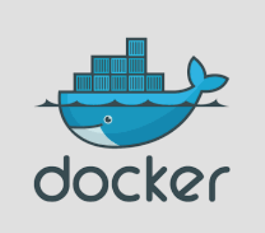
Docker (estibador en inglés) es un Sistema de Virtualización de Aplicaciones mediante contenedores, creado por Solomon Hykes y su equipo de ingenieros.
- En 2013 se convirtió en un proyecto de software libre (licencia Apache) en el que participan cada vez más empresas.
- La versión 1.0 se publicó en junio de 2014 y ha tenido un desarrollo muy rápido.
- En marzo de 2017, Docker anunció un desarrollo todavía más rápido, pasando a publicar una nueva versión cada mes. La numeración de las versiones adoptó al formato AA.MM (la primera fue Docker 17.03).
- En julio de 2018, Docker anunció que volvían a un desarrollo más pausado. A partir de Docker 18.09 habría una versión "estable" cada seis meses.
Contenedores¶
En virtualización, el principal problema de los hipervisores y las máquinas virtuales es que cada máquina virtual es independiente de las demás. Al no reutilizarse ningún componente, se ocupa mucho espacio tanto en disco como en memoria y el tiempo de ejecución siempre será mayor que si sólo hubiera un sistema operativo (sobre todo en el caso de hipervisores de tipo 2).
Para resolver este problema se crearon los contenedores en los que se utilizan mecanismos existentes en el sistema operativo para aislar las aplicaciones, pero compartiendo el mayor número posible de componentes del sistema operativo o incluso de las aplicaciones.
- Como definición, un contenedor es el equivalente a una máquina virtual de la virtualización clásica, pero mucho más ligera porque utiliza recursos del sistema operativo del host.
- Las aplicaciones de cada contenedor "ven" un sistema operativo, que puede ser diferente en cada contenedor, pero quien realiza el trabajo es el sistema operativo común que hay por debajo.
Note
- Los contenedores suelen ser elementos efímeros. La facilidad con la que pueden crearse y ponerse en marcha hace más fácil crear un nuevo contenedor que modificar uno ya existente. Por ello, los datos generados por las aplicaciones no se suelen guardar en los contenedores, sino fuera de ellos.
- Su ligereza hace más fácil tener varios contenedores con una aplicación en cada uno de ellos que tener un único contenedor con varias aplicaciones en él. Por ello, un aspecto importante de los contenedores es su orquestación, es decir, la administración simultánea de muchos contenedores, una de las herramientas más utilizadas es Kubernetes.
Máquinas Virtuales VS Contenedores¶
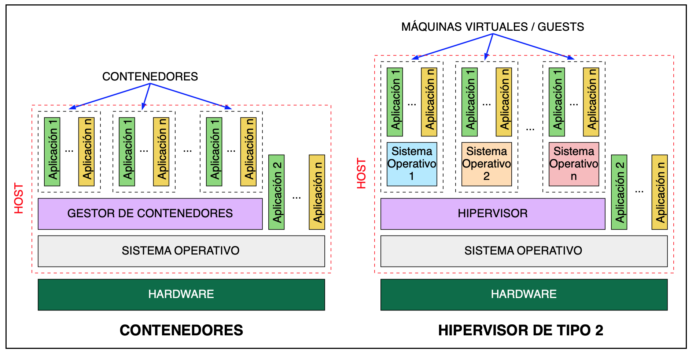
Microservicios¶
Uno de los objetivos principales de la configuración e implantación de contenedores es solucionar los problemas de:
- Errores de dependencias entre diferentes Sistemas Operativos de los trabajadores y máquinas de puesta en marcha.
- Evitar la Elevada carga y capacidad de las Máquinas Virtuales.
-
Caída de todos los servicios instalados de forma monolítica en los servidores.
-
Tipos de despliegue:
- SOA (Service Oriented Architecture) → Diferentes Máquinas una con cada Servicio conectadas.
- Monolítico → Todos los servicios en la misma máquina.
- MicroServicios → División más pequeña de los servicios.
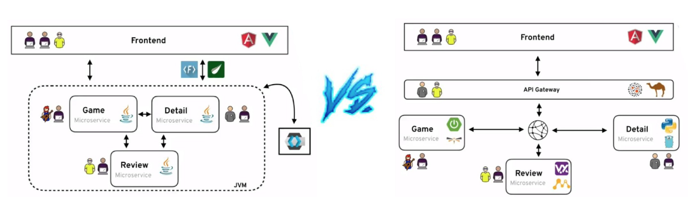
Características principales Contenedores¶
En resumen los contenedores:
- Consisten en Agrupar y Aislar Aplicaciones o grupos de aplicaciones que se ejecutan sobre un mismo núcleo de sistema operativo.
- Su característica principal se basa en su propio sistema de archivos ejecutable en cualquier Sistema Operativo.
- No es necesario emular el HW y SW completo como en las máquinas virtuales, por lo tanto son mucho más ligeros, comparten el máximo de componentes con el sistema operativo host, y su rapidez, ya que gracias a que apenas añaden capas adicionales consiguen casi velocidades nativas.
- Soluciona problemas de espacio y compatibilidades a la hora de puesta en marcha en servidores de producción.
- Los contenedores suelen ser elementos efímeros.
Características y definición de Docker¶
Docker se puede definir como un proyecto de código abierto que automatiza el despliegue de aplicaciones dentro de contenedores de software, proporcionando una capa adicional de abstracción y automatización de virtualización de aplicaciones en múltiples sistemas operativos.
Sus principales características son:
- Docker es una API amigable del tipo Open Source.
- Genera un proceso aislado del resto de los procesos de la máquina gracias a: Ejecutar sobre su propio sistema de ficheros, con su propio espacio de usuarios y procesos, y sus propias interfaces de red...
- Es Modular ya que esta dividido en varios componentes.
- Es portable e inmutable utilizando la plataforma DockerHub.
- Su es lema “Build, Ship and Run, any app,”.
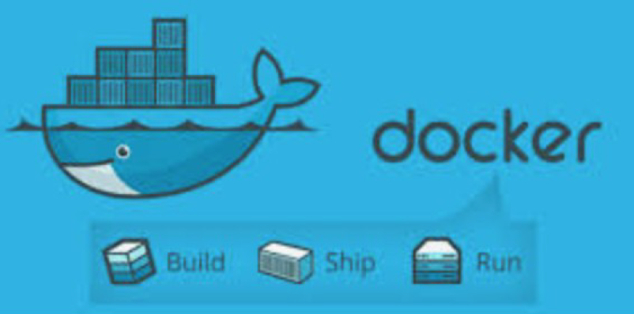
Nota
Aunque un contenedor puede incluir cualquier número de aplicaciones, lo habitual es que un contenedor contenga una sola aplicación (y los programas necesarios para ponerse en marcha).
Arquitectura Docker¶
- Docker Engine ("Motor" del Gestor Docker): el cual basado en la arquitectura de Cliente-Servidor (que pueden estar en la misma máquina, o en distintas), y realizada por mediante una API de REST que utiliza HTTP.
- API REST: interfaz de programación con un estilo de arquitectura software para sistemas hipermedia distribuidos como la World Wide Web.
- "Daemon Docker" (Servicio): lleva a cabo Gestión y enlace de los componentes del gestor.
- Imágenes: Las imágenes son una especie de plantillas que contienen como mínimo todo el software que necesita la aplicación para ponerse en marcha. están formadas por una colección ordenada de: Sistemas Archivos, Repositorios, Comandos, Parámetros, Aplicaciones.
- Contenedores: son el conjunto de procesos que encapsulan e identifican a una Imagen. Pueden ser:
- Creado, inicializado, parado, vuelto a ejecutar y destruido.
- Registros son imágenes guardadas en repositorios para: Almacenar o Distribuir.
- Se almacenan en Docker Hub y pueden ser Públicos o Privados.
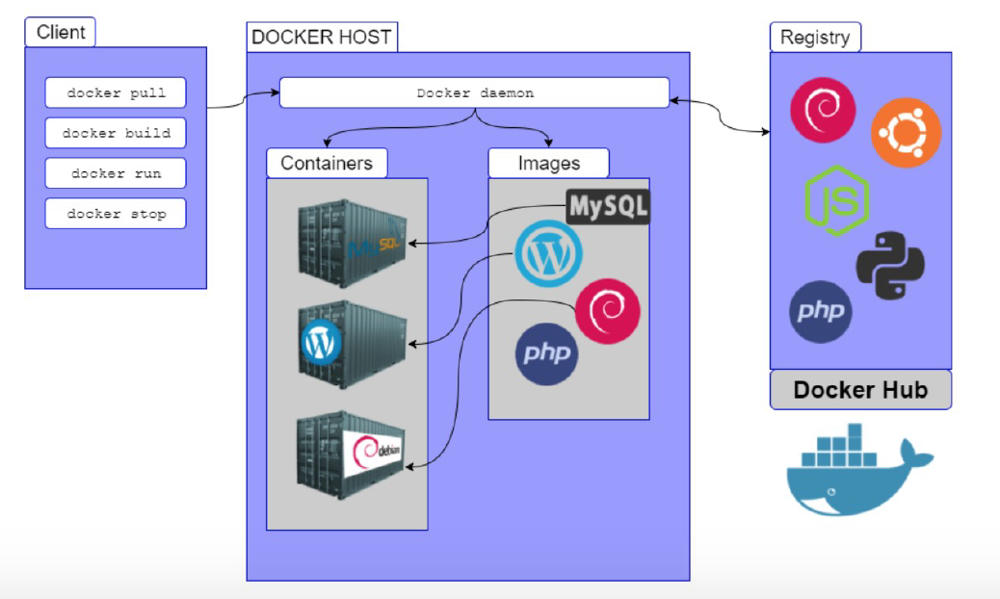
Nota
- El componente básico de Docker es el Docker Engine, pero Docker ofrece también una serie de herramientas para administrar, distribuir e instalar contenedores: Docker Compose, Docker Swarm.
- Las imágenes se pueden crear a partir de otras imágenes más básicas incluyendo software adicional en forma de capas. Todos los contenedores creados a partir de una imagen contienen el mismo software, aunque en el momento de su creación se pueden personalizar algunos detalles
Instalación¶
Para la Instalación de Docker es recomendable seguir la documentación oficial. Además se recomienda Instalar máquina Ubuntu Server última versión e instalar Docker en ella.
- Docker for Mac:
- Docker for Windows:
- Docker for ubuntu:
Advertencia
- Docker empezó estando disponible solamente para distribuciones GNU/Linux, pero desde junio de 2016 también está disponible como aplicación nativa en Windows Server 2016 y Windows 10.
- Docker utiliza la virtualización ofrecida por el sistema operativo. En el caso de Windows 10, eso significa que para usar Docker de forma nativa hay que activar Hyper-V que, por desgracia, es incompatible con VirtualBox. Para poder utilizar Docker en Windows 7 o en Windows 10 sin Hyper-V, Docker ofrece desde agosto de 2015 Docker Toolbox, que realmente es una máquina virtual (que se ejecuta en VirtualBox) que contiene Docker.
- Otra opción sería utilizar Podman
Ejemplo Instalación en Ubuntu server¶
- A continuación se muestra la instalación aconsejada para Ubuntu Server utilizando el método de repositorios:
- En primer lugar se actualizan los paquetes y se instalan los paquetes para utilizar el repositorio sobre HTTPS:
sudo apt-get update
apt-get install ca-certificates curl gnupg lsb-release
- Se añade la clave GPG oficial de Docker:
mkdir -p /etc/apt/keyrings
curl -fsSL https://download.docker.com/linux/ubuntu/gpg | sudo gpg --dearmor -o /etc/apt/keyrings/docker.gpg
- Se configura el repositorio:
echo "deb [arch=$(dpkg --print-architecture) signed-by=/etc/apt/keyrings/docker.gpg] https://download.docker.com/linux/ubuntu $(lsb_release -cs) stable" | sudo tee /etc/apt/sources.list.d/docker.list > /dev/null
- Se realiza de nuevo una actualización.
sudo apt-get update
- Instalación propia del Engine de Docker y Docker Compose:
apt-get install docker-ce docker-ce-cli containerd.io docker-compose-plugin
- Comprobamos que está correctamente bien instalado ejecutando el contenedor "Hello World"
docker run hello-world
Guía de instalación¶
La siguiente guía se basa en el ejemplo de instalación anterior realizandose la instalación de Docker en una máquina virtual de Ubuntu 22.04 siguiendo el método Install using the repository
- Se realiza un actualización y se instalan los paquetes necesarios para usar el repositorio sobre HTTPS:
- Código para la actualización de paquetes:
sudo apt-get update
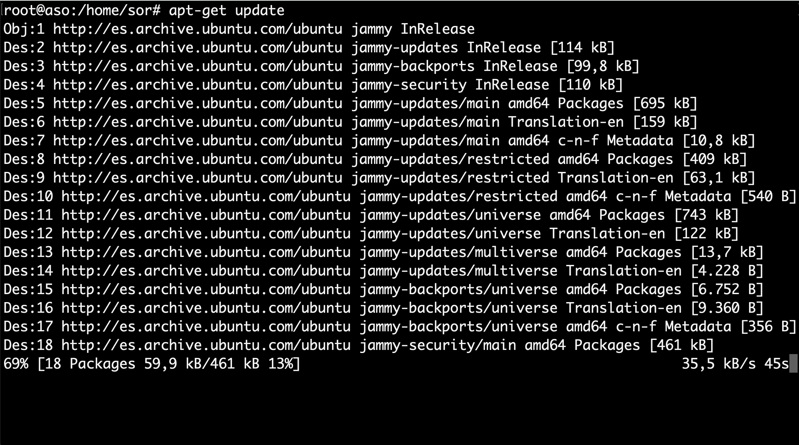
- Código para instalar los paquetes necesarios para usar el repositorio sobre HTTPS:
sudo apt-get install ca-certificates curl gnupg lsb-release
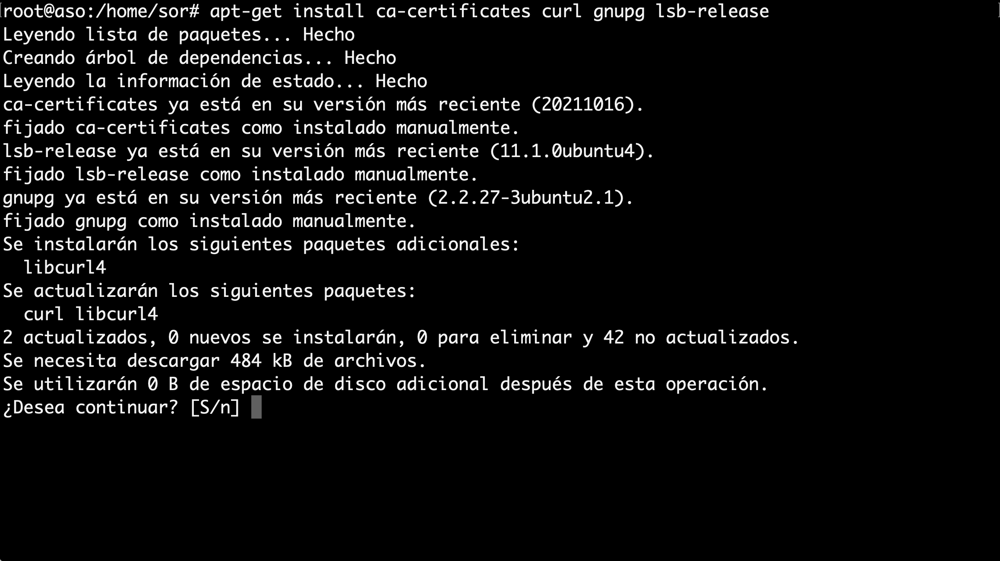
- Se añade la clave GPG oficial de Docker y el comando para configurar el repositorio:
- Código para los objetivos comentados en este punto:
sudo mkdir -p /etc/apt/keyrings
curl -fsSL https://download.docker.com/linux/ubuntu/gpg | sudo gpg --dearmor -o /etc/apt/keyrings/docker.gpg
echo "deb [arch=$(dpkg --print-architecture) signed-by=/etc/apt/keyrings/docker.gpg] https://download.docker.com/linux/ubuntu $(lsb_release -cs) stable" | sudo tee /etc/apt/sources.list.d/docker.list > /dev/null
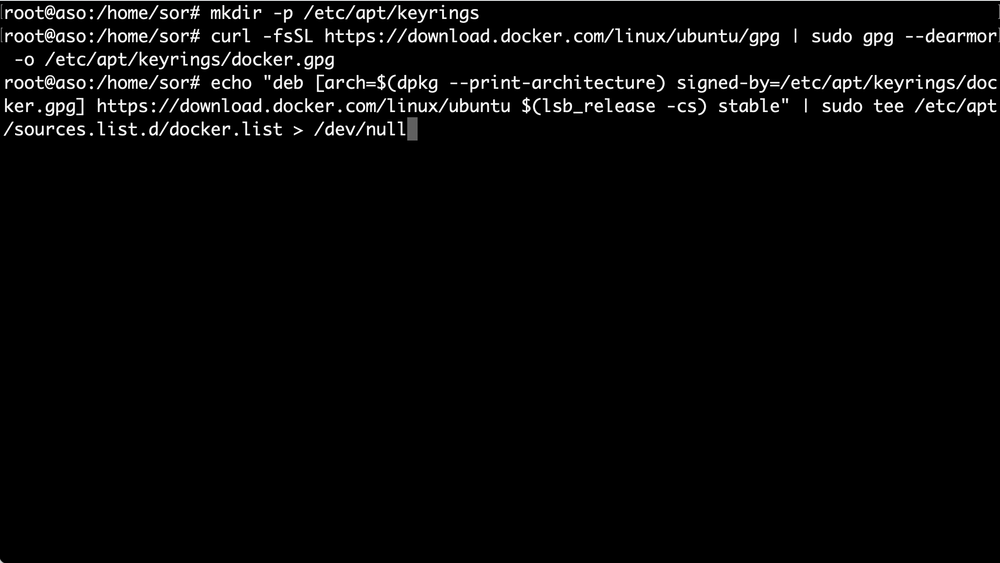
- Se realiza otra actualización:
- Código para la nueva actualización de paquetes, debido a la configuración realizada:
sudo apt-get update
- Resultado:
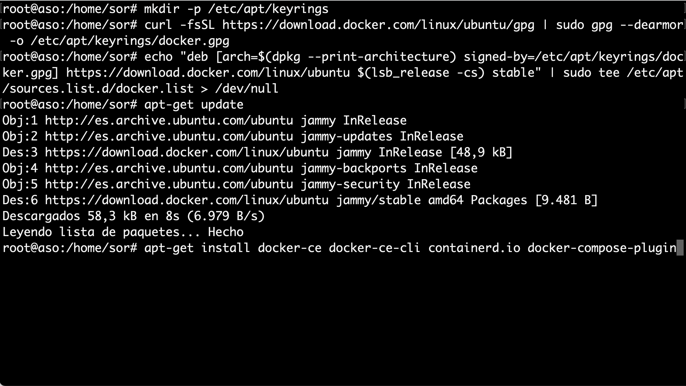
- Se Instala Docker Engine, containerd y Docker Compose:
- Código para la instalación de paquetes Docker:
sudo apt-get install docker-ce docker-ce-cli containerd.io docker-compose-plugin
- Resultado:
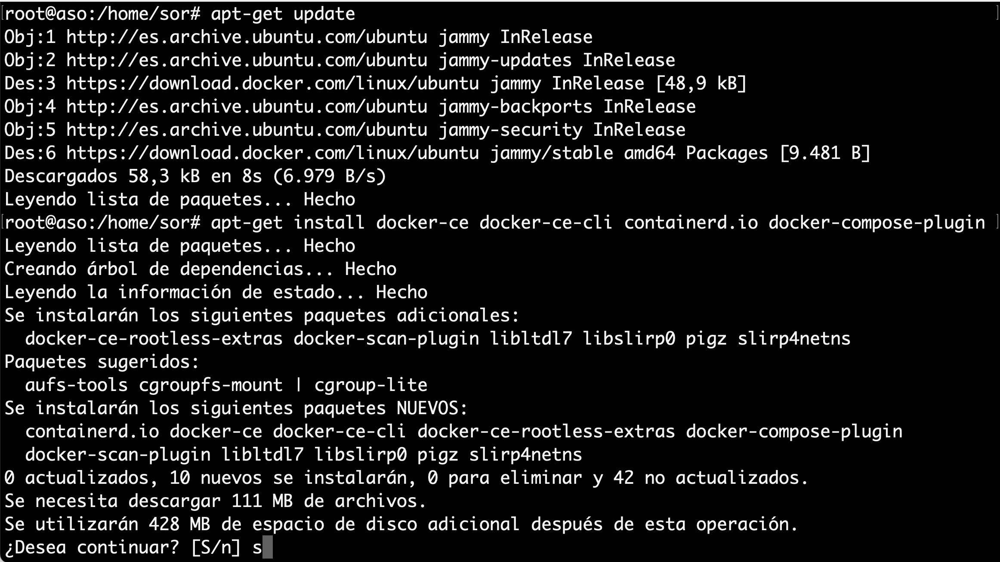
- Comprobación que la instalación del motor Docker sea correcta ejecutando la imagen hello-world:
- Código para la comprobación de Docker, mediante la ejecución de un contenedor:
sudo docker run hello-world
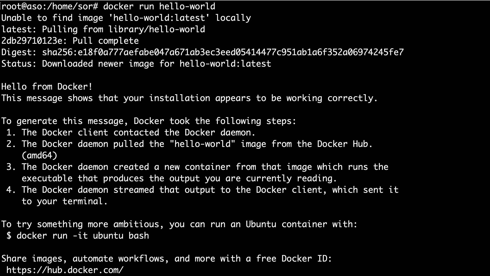
Principales Comandos¶
A continuación se muestran los comandos más utilizados:
| Comando | Acción | Comando | Acción |
|---|---|---|---|
docker info |
obtener información relativa a docker | docker start |
(docker container start) inicia la ejecución |
docker run |
(docker container run) crea y ejecuta el contenedor | docker rm |
(docker container eliminar) elimina el contenedor |
docker build |
crea una imagen | docker cp |
(docker container copiar) |
docker ps |
muestra la lista de contenedores creados | docker logs |
(docker container logs) muestra los errores |
docker inspect |
(docker container inspect) información detallada de los contenedores | docker stats |
(docker container stats) muestra el estado |
docker stop |
(docker container stop) detiene la ejecución del contenedor | docker system prune |
limpiar todo el sistena de contenedores imágenes y volumenes |
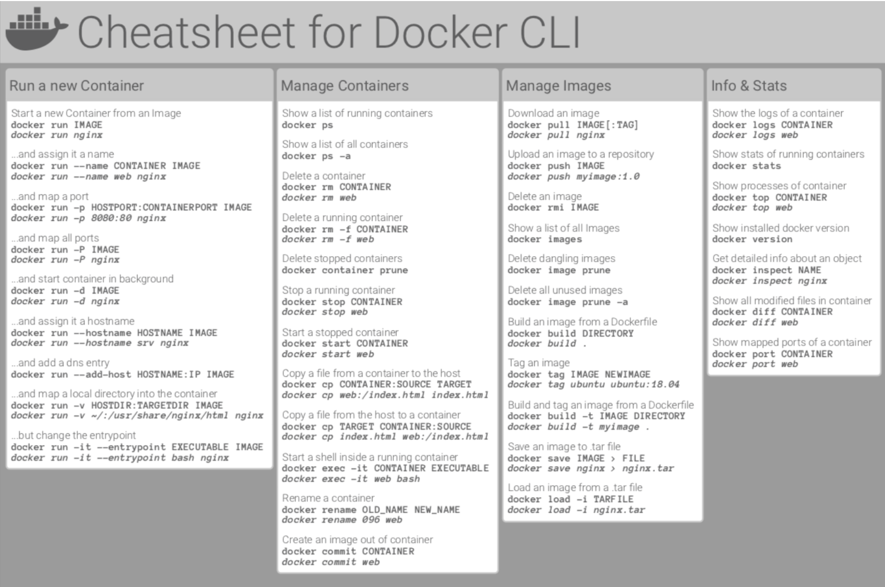
Primer Contenedor¶
A continuación se muestra un ejemplo guiado de la creación del contenedor "Hello World"
- Comprobación que inicialmente no hay ningún contenedor creado (la opción
-ahace que se muestren también los contenedores detenidos, sin ella se muestran sólo los contenedor que estén en marcha):
sudo docker ps -a
sudo docker container ls -a
- Compruebe que inicialmente tampoco disponemos de ninguna imagen:
sudo docker image ls
Nota
Docker crea los contenedores a partir de imágenes locales (ya descargadas), pero si al crear el contenedor no se dispone de la imagen local, Docker descarga la imagen de su repositorio.
- La orden más simple para crear un contenedor sigue esta estructura:
sudo docker run IMAGEN
Ejemplo
sudo docker run hello-world
Nota
Como no tenemos todavía la imagen en nuestro ordenador, Docker descarga la imagen, crea el contenedor y lo pone en marcha. En este caso, la aplicación que contiene el contenedor hello-world simplemente escribe un mensaje de salida al arrancar e inmediatamente se detiene el contenedor.
Si listamos de nuevo imagenes y contenedores, las veremos creadas.
- Cada contenedor tiene un identificador (ID) y un nombre distinto. Docker "bautiza" los contenedores con un "nombre peculiar", compuesto de un adjetivo y un apellido.
- Podemos crear tantos contenedores como queramos a partir de una imagen. Una vez la imagen está disponible localmente, Docker no necesita descargarla y el proceso de creación del contenedor es inmediato (aunque en el caso de hello-world la descarga es rápida, con imágenes más grandes la descarga inicial puede tardar un rato).
Tip
- Normalmente se aconseja usar siempre la opción
-d, que arranca el contenedor en segundo plano (detached) y permite seguir teniendo acceso a la shell (aunque con hello-world no es estrictamente necesario porque el contenedor hello-world se detiene automáticamente tras mostrar el mensaje). - Al crear el contenedor hello-world con la opción
-dno se muestra el mensaje, simplemente muestra el identificador completo del contenedor.
-
Los contenedores se pueden destruir mediante el comando rm, haciendo referencia a ellos mediante su nombre o su id. No es necesario indicar el id completo, basta con escribir los primeros caracteres (de manera que no haya ambigüedades).
-
Además podemos dar nombre a los contenedores al crearlos:
sudo docker run -d --name=hola-1 hello-world
Volúmenes¶
Docker simplifica enormemente la creación de contenedores, y eso lleva a tratar los contenedores como un elemento efímero, que se crea cuando se necesita y que no importa que se destruya puesto que puede ser reconstruido una y otra vez a partir de su imagen.
Advertencia
Pero si la aplicación o aplicaciones incluidas en el contenedor generan datos y esos datos se guardan en el propio contenedor, en el momento en que se destruyera el contenedor perderíamos esos datos.
-
El objetivo principal de los volumenes es no perder datos si borro el contenedor y mejorar rendimiento del Docker. Para conseguir la persistencia de los datos, se pueden emplear dos técnicas:
-
Los directorios enlazados (bind), en la que la información se guarda fuera de Docker, en la máquina host (por ejemplo si lo ejecutamos en la máquina virtual de Ubuntu o la máquina física de Lliurex en clase).
-
Los volúmenes, en la que la información se guarda mediante Docker, pero en unos elementos llamados volúmenes, independientes de las imágenes y los contenedores. Además los volúmenes se pueden catalogar en dos tipos.
- Volúmenes de Datos: es como si montará un disco en el contenedor y por defecto se realizan en un path temporal.
- Volúmenes de Host: Mismo concepto pero indicándole el path.
-
Tip
Aconsejable utilizar la técnica de volumenes, ya que, La ventaja frente a los directorios enlazados es que pueden ser gestionados por Docker. Otro detalle importante es que el acceso al contenido de los volúmenes sólo se puede hacer a través de algún contenedor que utilice el volumen.
Ventajas Volúmenes¶
Los volúmenes tienen varias ventajas sobre los directorios enlazados:
- Los volúmenes son más fáciles de respaldar o migrar que enlazar montajes.
- Puede administrar volúmenes mediante los comandos de la CLI de Docker o la API de Docker.
- Los volúmenes funcionan tanto en contenedores de Linux como de Windows.
- Los volúmenes se pueden compartir de forma más segura entre varios contenedores.
- Los controladores de volumen le permiten almacenar volúmenes en hosts remotos o proveedores en la nube, para cifrar el contenido de los volúmenes o para agregar otras funciones.
- Los nuevos volúmenes pueden tener su contenido precargado por un contenedor.
- Los volúmenes en Docker Desktop tienen un rendimiento mucho mayor que los directorios enlazados de hosts de Mac y Windows.
Nota
Además, los volúmenes suelen ser una mejor opción que los datos persistentes en la capa de escritura de un contenedor, porque un volumen no aumenta el tamaño de los contenedores que lo usan y el contenido del volumen existe fuera del ciclo de vida de un contenedor determinado.
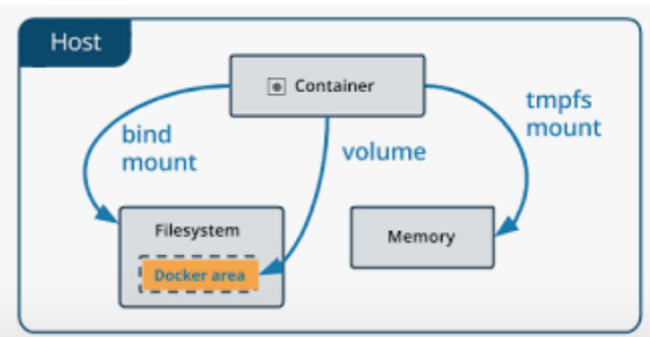
Nota
Los volúmenes son independientes de los contenedores, por lo que también podemos conservar los datos aunque se destruya el contenedor, reutilizarlos con otro contenedor, etc.
Opciones¶
- Opciones:
`Docker volume (create|Is|inspect|rm)`
- para crear el volumen a la vez que creamos y ejecutamos un contenedor se utilzan las opciones
vo--mount
En general, --mount más explícito y detallado. La mayor diferencia es que la sintaxis de -v combina todas las opciones juntas en un campo, mientras que la sintaxis --mount las separa. A continuación se muestra una comparación de la sintaxis de cada "flag".
-
-vo--volume: consta de tres campos, separados por dos puntos ( :). Los campos deben estar en el orden correcto y el significado de cada campo no es inmediatamente obvio.- En el caso de volúmenes con nombre, el primer campo es el nombre del volumen y es único en una máquina host determinada. Para volúmenes anónimos, se omite el primer campo.
- El segundo campo es la ruta donde se monta el archivo o directorio en el contenedor.
- El tercer campo es opcional y es una lista de opciones separadas por comas, como
ro(readonly).
-
--mount: Consta de varios pares clave-valor, separados por comas (cada uno formado por una= dupla). La sintaxis de --mountes más detallada que-vo--volume; además el orden de las claves no es significativo, por lo tanto el valor de las "flags" son más fáciles de entender. - Valores de las duplas:
- type: puede ser
bind,volumeotmpfs. - source: Para volúmenes con nombre, este es el nombre del volumen. Para volúmenes anónimos, este campo se omite. Puede especificarse como source o src.
- destination: toma como valor de la ruta en el archivo o directorio está montado en el contenedor. Puede ser especificado como destination,
dstotarget. - readonly: si está presente, hace que el montaje de enlace se monte en el contenedor como de solo lectura. Puede especificarse como
readonlyoro. - volume-opt se puede especificar más de una vez, toma un par clave-valor que consta del nombre de la opción y su valor. Ejemplo:
volume-opt=type=nfs
- type: puede ser
Nota
Todas las opciones de volúmenes están disponibles para los indicadores --mount y -v, por que a la hora de elegir uno u otro depende del técnico para su facilidad de configuración donde por su sintaxis a priori sería mejor --mount.
Ejemplo¶
A continuación se muestra un ejemplo de creación del servidor web NGINX.
Ejemplo
docker run -d \
--name nginx1 -p 8080:80 \
--mount type=volume,source=myvol1,target=/usr/share/nginx/html \
nginx:latest
Nota
- Si en lugar de la opción
-p 8080:80se utiliza la opción-Phace que Docker asigne de forma aleatoria un puerto de la máquina virtual al puerto asignado a Nginx en el contenedor.
- Si se creara una página de incio del apache diferente a la de defecto podríamos copiarla en el volumen y esta cambiaría:
nano index.html
- Nueva página de inicio:
<!DOCTYPE html>
<html lang="es">
<head>
<meta charset="utf-8">
<title>Apache en Docker</title>
<meta name="viewport" content="width=device-width, initial-scale=1.0">
</head>
<body>
<h1>¡Hola Mundo!</h1>
</body>
</html>
-
Para cambiar la página de inicio del apache se debe copiar dentro del volumen creado.
docker cp index.html nginx1:/usr/share/nginx/html -
Si accedemos al servidor apache aparecerá la nueva página.
Advertencia
Si aparece el error forbiden 403, es debido a permisos del index.html, debemos entrar en container y cambiar los permisos.
docker exec -it nginx1 /bin/bash
cd /usr/share/nginx/html
chown -R root:root index.html
-
Además podemos crear un nuevo contenedor con este volumen:
docker run -d \ --name nginx2 -p 8080:80 \ --mount type=volume,source=myvol1,target=/usr/share/nginx/html \ nginx:latest -
Se comprueba que el nuevo contenedor muestra la nueva página index.html
Advertencia
Si se intenta borrar el volumen del ejemplo anterior mientras los contenedores están en marcha, Docker muestra un mensaje de error que indica los contenedores afectados.
Herramientas Docker¶
Existen dos opciones destacables en Docker para agilizar el despliegue de imágenes y contenedores: Dockerfile y Docker Compose
- Dockerfile: es un archivo de texto plano que contiene una serie de instrucciones necesarias para crear una imagen que, posteriormente, se convertirá en una sola aplicación utilizada para un determinado propósito.
Summary
Imágenes → docker build → Dockerfile
- Docker Compose: es una herramienta que permite simplificar el uso de Docker. A partir de archivos
yamles más sencillo crear contenedores, conectarlos, habilitar puertos, volúmenes, etc.
Summary
Contenedores → docker compose up → docker-compose.yml
Dockerfile¶
Las instrucciones principales que pueden utilizarse en un Dockerfile son:
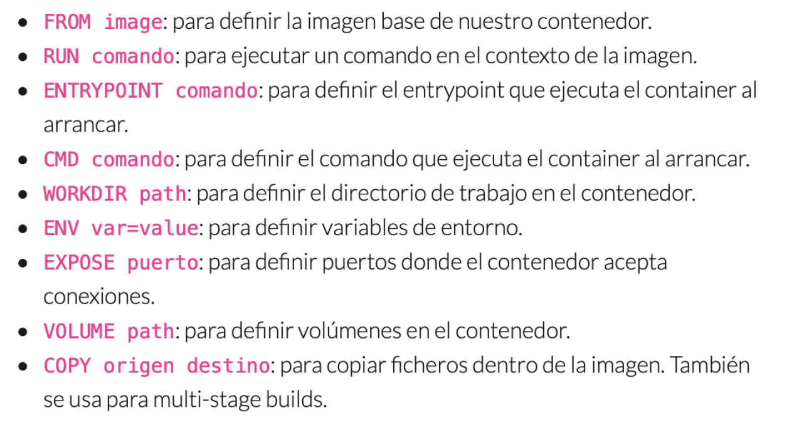
- Ver también: Best practices for writing Dockerfiles
Example
A continuación se muestra un ejemplo para la realización de la práctica de ampliación extraído de Apache oficial de Docker.
- Primer paso: generar imagen con un Dockerfile.
-
Se crea el archivo de texto Dockerfile.
touch Dockerfile nano Dockerfile -
Ejemplo de edición del Dockerfile.
# syntax=docker/dockerfile:1
FROM nginx:alpine
RUN apk update
COPY index.html/ /usr/share/nginx/html/
Nota
Se puede probar a introducir el volumen en el Dockerfile: VOLUME /myvol1
- Se crea la imagen y el contenedor.
docker build -t fcojavierhernandez/my-nginx-alpine . docker run -dit --name my-nginx-alpine -p 8081:80 fcojavierhernandez/my-nginx-alpine
Warning
- Mucho cuidado con el último punto de la instrucción de build, tiene un espacio antes. El último argumento (y el único imprescindible) es el nombre del archivo Dockerfile que tiene que utilizar para generar la imagen. Como en este caso se encuentra en el mismo directorio y tiene el nombre predeterminado Dockerfile, se puede escribir simplemente punto (
.). - Para indicar el nombre de la imagen se debe añadir la opción
-t. El nombre de la imagen debe seguir el patrónnombre-de-usuario/nombre-de-imagen. Si la imagen sólo se va a utilizar localmente, el nombre de usuario y de la imagen pueden ser cualquier palabra.
- Segundo paso: subir imagen al Docker Hub.
- Se debe generar una cuenta de Docker Hub con la cuenta corporativa de Office 365: Sign Up
- Con el comando
docker login, se realiza el acceso a la plataforma desde el terminal, introduciendo usuario y contraseña.docker login
Advertencia
Se debe acceder con el nic no con la cuenta de correo.
- Con el comando
docker push, se realiza el "Upload" de la imagen.
docker push fcojavierhernandez/my-nginx-alpine
- Por último, se debe comprobar accediendo a la plataforma de Docker Hub.
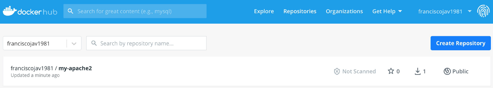
Docker Compose¶
-
Docker Compose es otro proyecto open source que permite definir aplicaciones multi-contenedor de una manera sencilla y declarativa.
-
Es una alternativa más cómoda al uso de los comandos docker run y docker build, que resultan un tanto tediosos cuando trabajamos con aplicaciones de varios componentes.
-
Se define un fichero
docker-compose.ymlque se puede observar en el ejemplo realizado en la práctica en el último apartado.
Example
A continuación se muestra un ejemplo para la realización de la práctica de ampliación: Instalación Wordpress
- Primer paso: instalación de Docker Compose.
apt-get install docker-compose-plugin
- Segundo paso: crear directorio del proyecto y dentro el archivo
yaml.
mkdir my_wordpress
touch docker-compose.yml
nano docker-compose.yml
- Tercer paso: se edita el archivo
yaml.
version: "3.9"
services:
db:
image: mysql:5.7
volumes:
- db_data:/var/lib/mysql
restart: always
environment:
MYSQL_ROOT_PASSWORD: somewordpress
MYSQL_DATABASE: wordpress
MYSQL_USER: wordpress
MYSQL_PASSWORD: wordpress
wordpress:
depends_on:
- db
image: wordpress:latest
volumes:
- wordpress_data:/var/www/html
ports:
- "8000:80"
restart: always
environment:
WORDPRESS_DB_HOST: db:3306
WORDPRESS_DB_USER: wordpress
WORDPRESS_DB_PASSWORD: wordpress
WORDPRESS_DB_NAME: wordpress
volumes:
db_data: {}
wordpress_data: {}
- Cuarto paso: en la carpeta creada del proyecto se ejecuta el comando
docker compose up -d
docker compose up -d
Comprobación
Se comprueba que se han creado los contenedores y se abre el navegador para comprobar que está disponible la instalación de WordPress.
Actividades¶
- PR101 (RA.2,3,4 // CE2a, CE3b, y CE4c // 1-10p). Despliegue de NextCloud con Docker y persistencia de datos
Criterios de evaluación asociados:
- CE-PI2a: Identificación y justificación de la herramienta Docker y sus componentes (redes, volúmenes).
- CE-PI3b: Configuración correcta del contenedor NextCloud y comprobación funcional.
- CE-PI4c: Documentación clara del procedimiento, incluyendo evidencias (capturas, comandos).
Tareas:
- Crear una red interna en Docker con un rango de IP definido.
- Crear un volumen llamado
volNextCloudpara almacenar datos persistentes. - Desplegar un contenedor NextCloud con:
- IP fija en la red creada.
- Montaje del volumen en/var/www/html/data.
- Exposición del servicio en el puerto 80. - Comprobar:
- Acceso a la interfaz web de NextCloud.
- Subida de un archivo y su persistencia tras eliminar y recrear el contenedor. - Documentar todo el proceso con capturas y comandos utilizados, y sobre todo el resultado, los problemas encontrados durante la práctica y como se han solucionado.
NOTA
No se trata de documentar el proceso tal cual como la guía, hay que documentar los resultados, los problemas encontrados y su solución.
- PR102 (RA.2,3,4 // CE2a, CE3b, y CE4c // 1-10p). Dockerfile y Docker Compose: Aplicación web personalizada
Criterios de evaluación asociados:
- CE-PI2a: Identificación y justificación de las herramientas Dockerfile y Docker Compose.
- CE-PI3b: Configuración correcta de imagen personalizada y aplicación multi-contenedor.
- CE-PI4c: Documentación clara del procedimiento, incluyendo evidencias (capturas, comandos).
Tareas:
-
Crear un Dockerfile personalizado para una aplicación web: - Usar imagen base
nginx:alpine. - Copiar una página HTML personalizada. - Exponer el puerto 80. - Construir la imagen con nombremi-aplicacion-web. -
Crear un docker-compose.yml para una aplicación LAMP: - Servicio web: usar la imagen personalizada creada. - Servicio base de datos: MySQL 8.0. - Configurar volúmenes persistentes para ambos servicios. - Configurar variables de entorno para la base de datos. - Exponer puertos apropiados.
-
Desplegar la aplicación: - Ejecutar
docker compose up -d. - Verificar que ambos contenedores estén funcionando. - Acceder a la aplicación web desde el navegador. -
Publicar en Docker Hub: - Crear cuenta en Docker Hub. - Hacer login desde terminal. - Subir la imagen personalizada. - Verificar la publicación.
-
Documentar el proceso: - Capturas de pantalla de cada paso. - Comandos utilizados. - Problemas encontrados y soluciones aplicadas. - URL de la imagen en Docker Hub.
Archivos a entregar: - Dockerfile - docker-compose.yml - index.html (página personalizada) - Documentación con capturas y explicaciones - URL de la imagen en Docker Hub
Consejos
- Revisa la documentación oficial de Docker para Dockerfile y Docker Compose.
- Prueba cada paso antes de continuar con el siguiente.
- Asegúrate de que los nombres de imagen sigan el formato
usuario/nombre-imagen. - Verifica que los puertos no estén en conflicto con otros servicios.